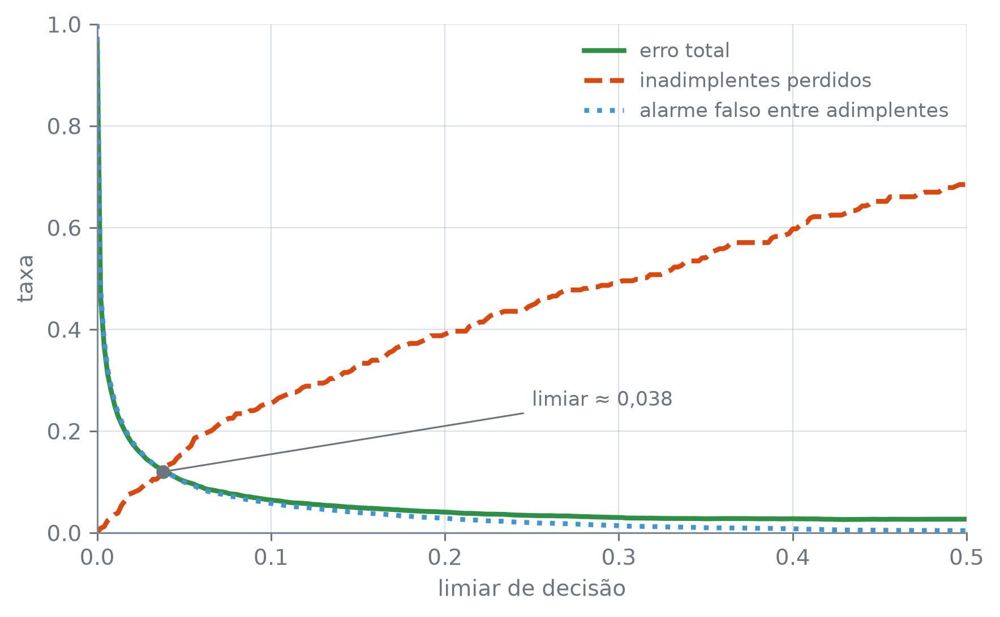
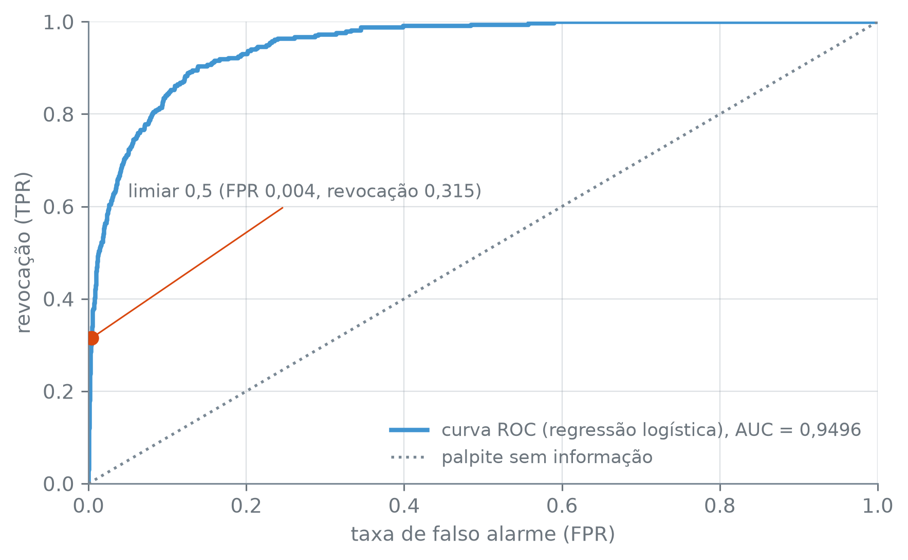

n_total = len(y)
acerto_trivial = float((y == 0).mean())
erro_trivial = float(y.mean())
n_total, round(acerto_trivial, 4), round(erro_trivial, 4)(10000, 0.9667, 0.0333)Esta seção corresponde à seção 4.4.2 de James et al. (2023).
Um classificador de inadimplência pode errar de dois jeitos bem diferentes: dizer não para quem de fato fica inadimplente, e dizer sim para quem não fica. O erro total soma os dois, como se custassem o mesmo. Esta seção separa um do outro, com o classificador logístico da seção 9.2 (saldo, renda e o indicador de estudante) como caso de trabalho. Tudo o que segue é medido sobre as mesmas linhas que ajustaram o modelo, e não em dado novo. O vocabulário que sai daqui vale para julgar qualquer classificador.
(10000, 0.9667, 0.0333)Um classificador que responde sempre não, sem olhar saldo, renda nem estudante, acerta 96,67% das 10.000 linhas, porque 96,67% delas de fato não são inadimplentes; ele erra nos 3,33% restantes, e só neles. Esse número não mede o classificador: mede a proporção da classe rara. Um classificador de verdade precisa ser julgado contra ele, e não contra 100%, e a acurácia sozinha não distingue um classificador que aprendeu algo de um que só repete a classe mais comum.
| inadimplente previsto | não | sim |
|---|---|---|
| inadimplente verdadeiro | ||
| não | 9627 | 40 |
| sim | 228 | 105 |
modelo.predict(X) usa o limiar padrão de 0,5: prevê sim quando a probabilidade ajustada passa de 0,5, e não caso contrário. A matriz segue a convenção da seção 9.3, linha para a verdade e coluna para a previsão. Chame as quatro células de VN (verdadeiro negativo), FP (falso positivo), FN (falso negativo) e VP (verdadeiro positivo), na ordem em que aparecem na tabela: linha não, colunas não e sim; depois linha sim, colunas não e sim.
vn_05, fp_05 = int(matriz_05[0, 0]), int(matriz_05[0, 1])
fn_05, vp_05 = int(matriz_05[1, 0]), int(matriz_05[1, 1])
erro_05 = (fp_05 + fn_05) / len(y)
precisao_05 = vp_05 / (vp_05 + fp_05)
revocacao_05 = vp_05 / (vp_05 + fn_05)
(
vn_05,
fp_05,
fn_05,
vp_05,
round(erro_05, 4),
round(precisao_05, 4),
round(revocacao_05, 4),
)(9627, 40, 228, 105, 0.0268, 0.7241, 0.3153)No limiar padrão, são 9.627 acertos entre quem não fica inadimplente, contra 40 falsos alarmes, e 105 acertos entre quem fica, contra 228 que passam despercebidos. O erro total, (FP + FN) dividido pelas 10.000 linhas, é 0,0268, abaixo dos 0,0333 do classificador trivial. Mas FP + FN mistura dois erros de custo bem diferente, e é aí que entram a precisão e a revocação:
\[ \text{precisão} = \frac{VP}{VP + FP}, \qquad \text{revocação} = \frac{VP}{VP + FN}. \]
A precisão responde: entre quem o modelo acusou de inadimplente, quantos de fato eram? Aqui, 105 entre 105 + 40 = 145, ou 0,7241. A revocação responde: entre quem de fato ficou inadimplente, quantos o modelo achou? São 105 entre 105 + 228 = 333, ou 0,3153. O erro total de 2,68% parece ótimo até se perguntar de quem é o erro: no limiar padrão, o modelo acha 105 dos 333 inadimplentes e deixa 228 passarem sem sinal nenhum.
Matriz de confusão, precisão e revocação são o vocabulário mínimo para julgar um classificador. A matriz separa os quatro jeitos de acertar e errar: VN, FP, FN e VP. A precisão, VP / (VP + FP), mede a confiança de um alarme: quando o modelo diz sim, com que frequência está certo. A revocação, VP / (VP + FN), mede a cobertura sobre quem de fato é positivo: da classe que interessa achar, quanto o modelo encontra. Nenhuma das duas depende do algoritmo que gerou a previsão; servem do mesmo jeito para regressão logística, LDA, QDA, Naive Bayes ou qualquer outro classificador.
predict decide com um limiar fixo, 0,5, mas nada obriga a esse número: a mesma probabilidade ajustada, comparada com um limiar mais baixo, muda quem entra em cada célula da matriz. Baixando o limiar para 0,2, o que deve acontecer com os falsos alarmes e com os inadimplentes perdidos?
def metricas(limiar):
previsto = (proba >= limiar).astype(int)
matriz = confusion_matrix(y, previsto, labels=[0, 1])
vn, fp = int(matriz[0, 0]), int(matriz[0, 1])
fn, vp = int(matriz[1, 0]), int(matriz[1, 1])
erro = (fp + fn) / len(y)
precisao = vp / (vp + fp) if (vp + fp) else float("nan")
revocacao = vp / (vp + fn) if (vp + fn) else float("nan")
return vn, fp, fn, vp, erro, precisao, revocacao
limiares_nomeados = [0.5, 0.2, 0.1]
resultados = [metricas(limiar) for limiar in limiares_nomeados]
tabela_limiares = pd.DataFrame(
{
"VN": [r[0] for r in resultados],
"FP": [r[1] for r in resultados],
"FN": [r[2] for r in resultados],
"VP": [r[3] for r in resultados],
"erro": [r[4] for r in resultados],
"precisão": [r[5] for r in resultados],
"revocação": [r[6] for r in resultados],
},
index=pd.Index(limiares_nomeados, name="limiar"),
)
tabela_limiares.round(4)| VN | FP | FN | VP | erro | precisão | revocação | |
|---|---|---|---|---|---|---|---|
| limiar | |||||||
| 0.5 | 9627 | 40 | 228 | 105 | 0.0268 | 0.7241 | 0.3153 |
| 0.2 | 9390 | 277 | 130 | 203 | 0.0407 | 0.4229 | 0.6096 |
| 0.1 | 9107 | 560 | 85 | 248 | 0.0645 | 0.3069 | 0.7447 |
Baixar o limiar de 0,5 para 0,2 muda a matriz inteira: FP sobe de 40 para 277, FN cai de 228 para 130, e VP sobe de 105 para 203. A revocação vai de 0,3153 para 0,6096, quase o dobro de inadimplentes encontrados, e a precisão cai de 0,7241 para 0,4229, porque boa parte de quem passa a ser acusado não é inadimplente. O erro total também sobe, de 0,0268 para 0,0407. Em 0,1, a revocação chega a 0,7447 e a precisão cai a 0,3069, com erro total de 0,0645. Nenhum dos três limiares da tabela melhora a revocação e a precisão ao mesmo tempo: cada um compra uma pagando com a outra.
Três limiares escolhidos à mão mostram a direção da troca, mas não dizem o que acontece no intervalo entre eles. A varredura a seguir acompanha os dois tipos de erro, os inadimplentes perdidos e os alarmes falsos, com o limiar indo de 0,0 a 0,5 em passos de 0,002:
n_pos = int(y.sum())
n_neg = int((y == 0).sum())
grade_limiares = np.linspace(0.0, 0.5, 251)
erro_total = np.empty_like(grade_limiares)
taxa_perdidos = np.empty_like(grade_limiares)
taxa_falso_alarme = np.empty_like(grade_limiares)
fp_contagem = np.empty(len(grade_limiares), dtype=int)
fn_contagem = np.empty(len(grade_limiares), dtype=int)
for i, limiar in enumerate(grade_limiares):
previsto = (proba >= limiar).astype(int)
fp = int(((y == 0) & (previsto == 1)).sum())
fn = int(((y == 1) & (previsto == 0)).sum())
fp_contagem[i] = fp
fn_contagem[i] = fn
erro_total[i] = (fp + fn) / len(y)
taxa_perdidos[i] = fn / n_pos
taxa_falso_alarme[i] = fp / n_neg
perdidos_nunca_cai_com_limiar = bool((np.diff(taxa_perdidos) >= 0).all())
falso_alarme_nunca_sobe_com_limiar = bool((np.diff(taxa_falso_alarme) <= 0).all())
# Onde as duas TAXAS (denominadores 333 e 9.667) mais se aproximam.
indice_cruzamento_taxas = int(np.argmin(np.abs(taxa_perdidos - taxa_falso_alarme)))
limiar_cruzamento_taxas = float(grade_limiares[indice_cruzamento_taxas])
# Onde as duas CONTAGENS (mesma unidade: pessoas) mais se aproximam: um
# ponto diferente do cruzamento das taxas, de propósito.
indice_cruzamento_contagem = int(np.argmin(np.abs(fp_contagem - fn_contagem)))
limiar_cruzamento_contagem = float(grade_limiares[indice_cruzamento_contagem])
erro_minimo = float(erro_total.min())
limiares_no_minimo = [
round(float(t), 3) for t in grade_limiares[erro_total == erro_total.min()]
]
(
perdidos_nunca_cai_com_limiar,
falso_alarme_nunca_sobe_com_limiar,
round(limiar_cruzamento_taxas, 3),
int(fp_contagem[indice_cruzamento_taxas]),
int(fn_contagem[indice_cruzamento_taxas]),
round(limiar_cruzamento_contagem, 3),
int(fp_contagem[indice_cruzamento_contagem]),
int(fn_contagem[indice_cruzamento_contagem]),
round(erro_minimo, 4),
limiares_no_minimo,
round(float(erro_total[-1]), 4),
)(True, True, 0.038, 1179, 40, 0.278, 160, 159, 0.0261, [0.428, 0.43], 0.0268)np.empty_like(arr): um array do mesmo formato de arr, ainda sem valores definidos, para ser preenchido dentro do laço.
Nos 251 limiares varridos, a fração de inadimplentes perdidos nunca cai quando o limiar sobe (perdidos_nunca_cai_com_limiar é True), e a fração de alarmes falsos entre adimplentes nunca sobe (falso_alarme_nunca_sobe_com_limiar é True). As duas nunca andam no mesmo sentido, e não só nos três pontos da tabela.
As duas taxas se cruzam perto do limiar 0,038, mas são taxas com bases diferentes: 333 inadimplentes contra 9.667 adimplentes. Nesse mesmo limiar, em número de pessoas, o modelo produz 1.179 falsos alarmes contra só 40 inadimplentes perdidos, quase 30 alarmes falsos por inadimplente não achado. Taxas iguais não são erros iguais: quem opera o cartão sente a contagem, e não a taxa. As duas contagens só se equilibram bem mais adiante, perto do limiar 0,278, com 160 falsos alarmes contra 159 perdidos.
O menor erro total da varredura, 0,0261, aparece em dois limiares, 0,428 e 0,430 (limiares_no_minimo). É um empate exato, porque erro_total é uma contagem inteira dividida por 10.000. Não fica exatamente em 0,5, que dá 0,0268, mas perto de 0,5 o erro total já está quase plano.
fig, ax = plt.subplots()
ax.plot(grade_limiares, erro_total, color="C2", linewidth=2.2, label="erro total")
ax.plot(
grade_limiares,
taxa_perdidos,
color="C1",
linewidth=2.2,
linestyle="--",
label="inadimplentes perdidos",
)
ax.plot(
grade_limiares,
taxa_falso_alarme,
color="C0",
linewidth=2.2,
linestyle=":",
label="alarme falso entre adimplentes",
)
ax.scatter(
[limiar_cruzamento_taxas],
[taxa_perdidos[indice_cruzamento_taxas]],
color="#6C757D",
zorder=5,
s=28,
)
ax.annotate(
f"limiar ≈ {limiar_cruzamento_taxas:.3f}".replace(".", ","),
xy=(limiar_cruzamento_taxas, taxa_perdidos[indice_cruzamento_taxas]),
xytext=(0.25, 0.25),
textcoords="data",
fontsize=9,
arrowprops=dict(arrowstyle="-", color="#6C757D", linewidth=0.8),
)
ax.set_xlim(0, 0.5)
ax.set_ylim(0, 1)
ax.set_xlabel("limiar de decisão")
ax.set_ylabel("taxa")
ax.legend(loc="upper right")
plt.tight_layout()
plt.show()
O que decide qual limiar usar não sai dessa figura. Baixar o limiar nunca acha menos inadimplentes, e nunca gera menos alarmes falsos, e nenhum ponto do gráfico é “o melhor” sem responder a uma pergunta que a figura não faz: quanto custa, para quem opera o cartão, deixar passar um inadimplente comparado a incomodar um cliente em dia? Essa é uma pergunta sobre o problema, e não sobre estatística. A figura não escolhe um limiar; mostra o que cada escolha custa.
A varredura acima olha limiar por limiar. A curva ROC resume todos eles de uma vez: para cada limiar possível, marca a taxa de acerto entre inadimplentes (a revocação) contra a taxa de alarme falso entre adimplentes, sem mostrar o limiar em si.
fpr, tpr, limiares_roc = roc_curve(y, proba)
auc = roc_auc_score(y, proba)
n_proba_distintas = len(np.unique(proba))
n_pares_saldo_renda_repetidos = int(base.duplicated(["saldo", "renda"]).sum())
limiar_roc_inicial = float(limiares_roc[0])
curva_nunca_abaixo_da_diagonal = bool((tpr >= fpr).all())
(
n_proba_distintas,
n_pares_saldo_renda_repetidos,
len(fpr),
limiar_roc_inicial,
round(float(auc), 4),
curva_nunca_abaixo_da_diagonal,
)(10000, 0, 440, inf, 0.9496, True)roc_curve(y, probabilidades): devolve três arrays alinhados, a taxa de falso alarme (fpr), a revocação (tpr) e o limiar de cada ponto da curva. roc_auc_score(y, probabilidades) dá a área sob essa curva. As duas recebem as probabilidades, e não as previsões 0/1, porque percorrem todos os limiares.
np.unique(arr): os valores distintos de arr, sem repetição.
df.duplicated(colunas): marca com True cada linha que repete, nas colunas dadas, uma linha anterior; .sum() conta as repetições.
roc_curve não devolve um ponto por probabilidade observada. As probabilidades ajustadas têm 10.000 valores distintos (n_proba_distintas), um por cliente; e nenhum par de clientes repete ao mesmo tempo saldo e renda (n_pares_saldo_renda_repetidos sai 0). Por padrão, a função descarta os pontos que ficam em linha reta com os vizinhos e não mudam a forma da curva (drop_intermediate=True), e acrescenta no começo um limiar artificial, inf, que não é probabilidade nenhuma: daí 440 pontos, bem menos que um por cliente. São os vértices que bastam para desenhar a curva inteira.
Em nenhum dos 440 a revocação fica abaixo da taxa de falso alarme (curva_nunca_abaixo_da_diagonal é True): a curva não passa para baixo da diagonal em ponto nenhum. roc_auc_score resume a curva inteira num número, a área sob ela, AUC: 0,9496, perto do máximo de 1,0 e bem acima dos 0,5 de um classificador sem informação nenhuma.
fpr_05 = fp_05 / n_neg
fig, ax = plt.subplots()
ax.plot(
fpr,
tpr,
color="C0",
linewidth=2.2,
label=f"curva ROC (regressão logística), AUC = {auc:.4f}".replace(".", ","),
)
ax.plot(
[0, 1],
[0, 1],
color="#7A8894",
linestyle=":",
linewidth=1.4,
label="palpite sem informação",
)
ax.scatter([fpr_05], [revocacao_05], color="C1", zorder=5, s=40)
ax.annotate(
f"limiar 0,5 (FPR {fpr_05:.3f}, revocação {revocacao_05:.3f})".replace(".", ","),
xy=(fpr_05, revocacao_05),
xytext=(0.05, 0.62),
textcoords="data",
fontsize=9,
arrowprops=dict(arrowstyle="-", color="C1", linewidth=0.8),
)
ax.set_xlim(0, 1)
ax.set_ylim(0, 1)
ax.set_xlabel("taxa de falso alarme (FPR)")
ax.set_ylabel("revocação (TPR)")
ax.legend(loc="lower right")
plt.tight_layout()
plt.show()
Default (azul): revocação (TPR) contra taxa de falso alarme (FPR), para os 440 pontos que definem a curva. A diagonal pontilhada cinza marca um classificador sem informação nenhuma, com FPR e revocação crescendo juntos, um a um. O ponto laranja marca o limiar padrão, 0,5, da matriz de confusão. A área sob a curva azul, 0,9496, está na legenda.
O ponto marcado é o limiar 0,5 da matriz de confusão: FPR de 0,004 (os 40 falsos alarmes sobre 9.627 + 40 = 9.667 adimplentes) e revocação de 0,315 (os 105 acertos sobre 105 + 228 = 333 inadimplentes). É o mesmo par de números da matriz, agora como um ponto sobre a curva inteira. A diagonal pontilhada marca o que um classificador sem informação produziria: ganhar revocação só à custa de FPR, na mesma proporção. A curva do modelo logístico nunca passa para baixo dela, e é a distância entre as duas, resumida na área de 0,9496, que separa um classificador que aprendeu algo de um que está adivinhando.
A matriz de confusão, a precisão, a revocação e a curva ROC não dependem de qual classificador as produziu. A seção 9.4 deixou em aberto como LDA, QDA e Naive Bayes erram sobre o Default, e com esse vocabulário a pergunta tem resposta. No limiar 0,5, os quatro classificadores:
classificadores = {
"logística": modelo,
"LDA": LinearDiscriminantAnalysis().fit(X, y),
"QDA": QuadraticDiscriminantAnalysis().fit(X, y),
"Naive Bayes": GaussianNB().fit(X, y),
}
tabela_quatro = pd.DataFrame(
{
nome: {
"precisão": precision_score(y, m.predict(X)),
"revocação": recall_score(y, m.predict(X)),
"erro total": (m.predict(X) != y).mean(),
}
for nome, m in classificadores.items()
}
).T.round(4)
tabela_quatro| precisão | revocação | erro total | |
|---|---|---|---|
| logística | 0.7241 | 0.3153 | 0.0268 |
| LDA | 0.7822 | 0.2372 | 0.0276 |
| QDA | 0.7520 | 0.2823 | 0.0270 |
| Naive Bayes | 0.6493 | 0.2613 | 0.0293 |
maior_revocacao = float(tabela_quatro["revocação"].max())
menor_revocacao = float(tabela_quatro["revocação"].min())
todos_perdem_a_maioria = bool(maior_revocacao < 0.5)
faixa_erro_total = (
float(tabela_quatro["erro total"].min()),
float(tabela_quatro["erro total"].max()),
)
menor_revocacao, maior_revocacao, todos_perdem_a_maioria, faixa_erro_total(0.2372, 0.3153, True, (0.0268, 0.0293))precision_score(y, previsto) e recall_score(y, previsto): a precisão e a revocação da classe 1, calculadas direto das previsões, sem montar a matriz de confusão.
Os erros totais ficam entre 2,68% e 2,93%, mas os quatro dividem os erros de jeitos diferentes. A revocação vai de 0,2372 a 0,3153 entre eles, e todos_perdem_a_maioria confirma que nenhum acha metade dos inadimplentes no limiar 0,5. Para qualquer um dos quatro, baixar o limiar é o que muda esse quadro, e o preço é do mesmo tipo que a varredura mostrou para a logística: mais alarmes falsos.